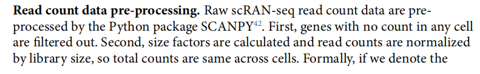
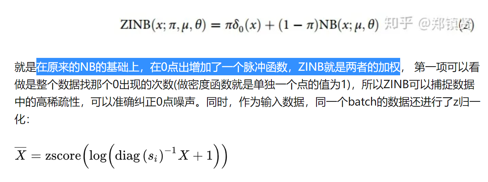
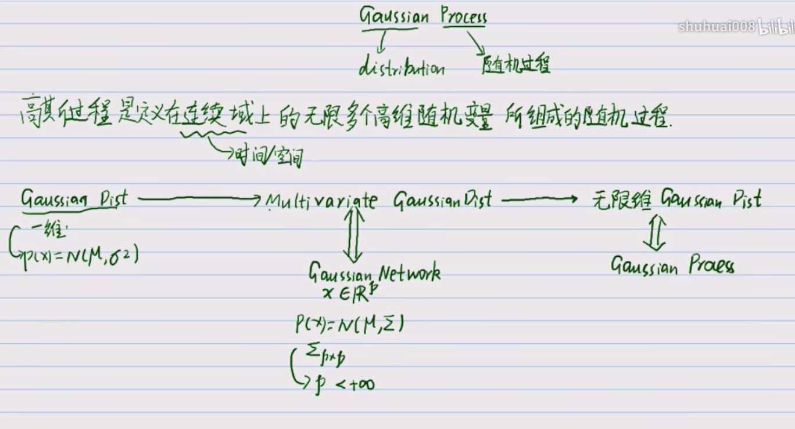
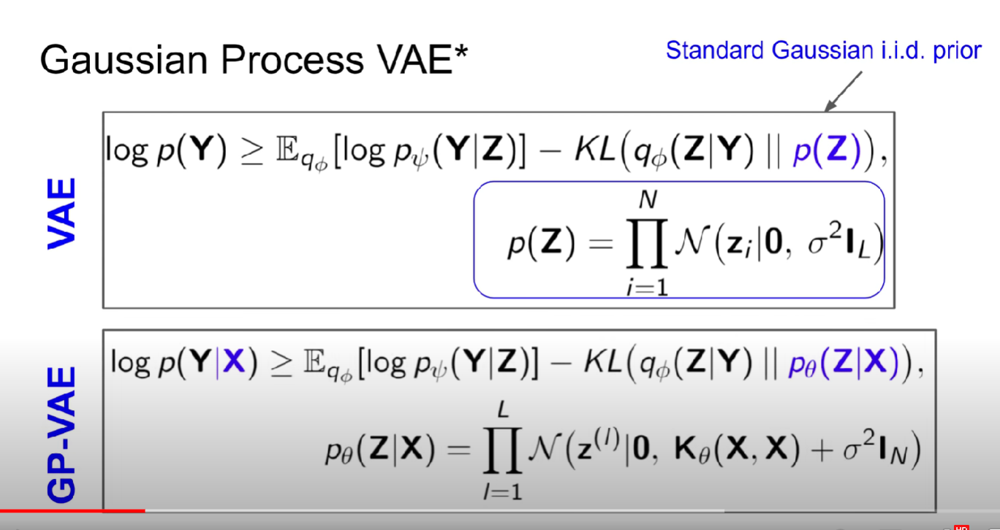
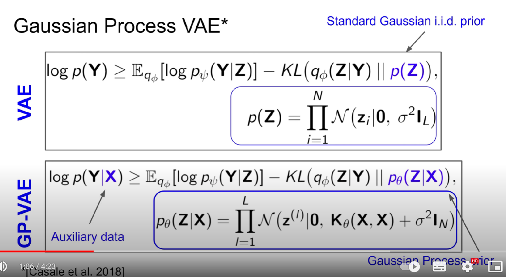
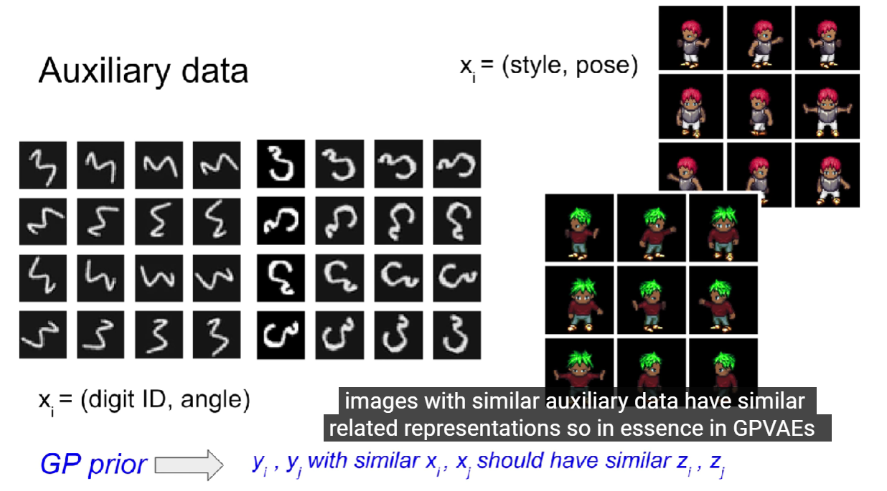
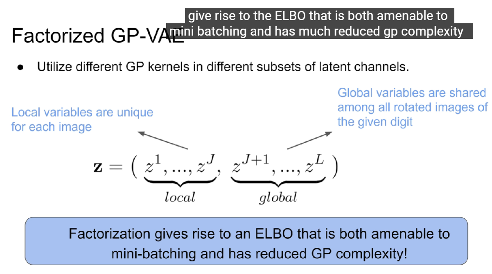
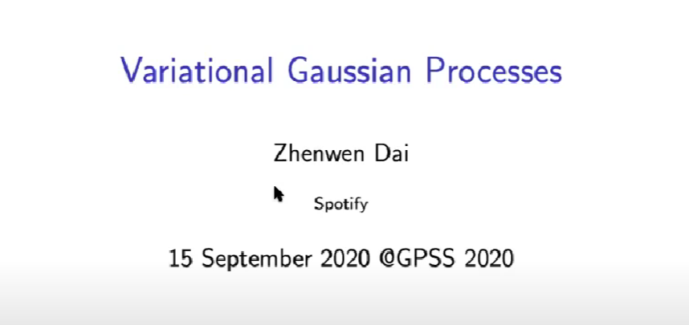
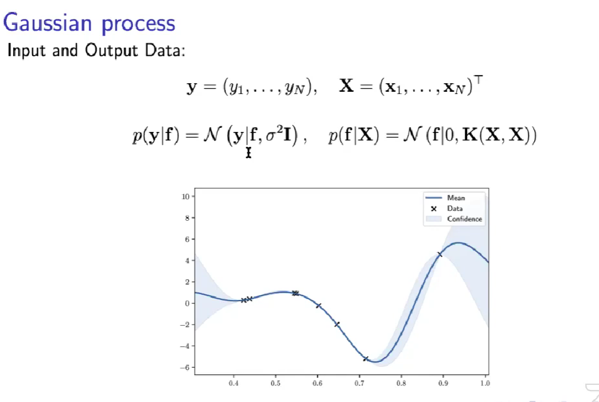
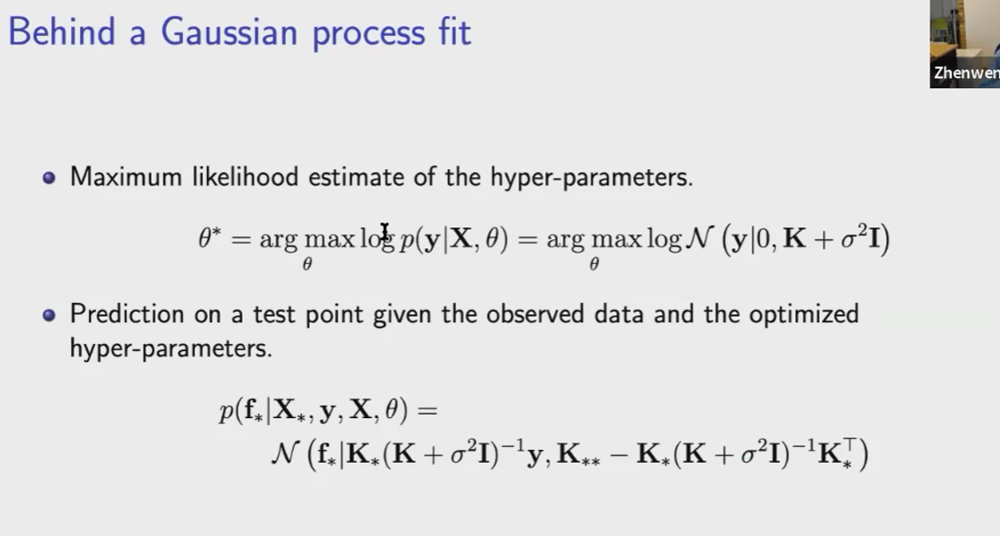

空间转录组
“空间转录组”（ST）是一项能够保留组织空间位置并同时解析组织切片转录组信息的技术。
空间转录组研究中的一项关键任务是识别跨空间位置具有不同空间表达模式的空间变异基因（SVG）。
Scanpy数据结构：AnnData
scRNA-seq的reads count数据 指的就是矩阵里的那些数值？
normalize：每个细胞的total count相等
total count相等，单个的count服从正态分布
https://zhuanlan.zhihu.com/p/72408777
https://www.jianshu.com/p/4b3a522ad777 考虑批次？
deepcluster是先只考虑ZINB，然后参数固定，隐层固定
  we see that a separate gp prior is placed over the entire data set in each of the l latent channels. additionally we make use of the so-called auxiliary data denoted by x
what is auxiliary data. it is the metadata that is leveraged to improve latent representations
for example in the rotated MNIST each image is associated with a digit id and an angle
https://joo.st/blog/variational_inference_sgp_from_vae.html
$ P (x) ~ \sim\mathcal {N}(\mu, \sigma^2)$
  